CHAOS DESTRUCTION
THE MISSION
A performant Chaos Destruction system mimicking real-world architectural failure with anchor fields.
TECHNICAL SPECS
- ▶ CHAOS PHYSICS: High fidelity structural collapse.
- ▶ ANCHOR FIELDS: Keeping the building structurally sound until damaged.
DEVELOPMENT LOG
Protocol: Shatter
Environmental destruction for player immersion
Researcher Harshiv Pankhania
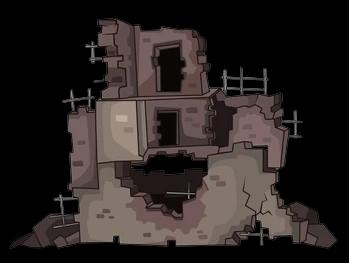
Introduction
• The Problem is in most games nowadays is the environment feeling very static. Not a realistic world even with the high graphics players often have a lack of environment destruction. This lack of detail to the game creates a "ludonarrative dissonance" where the players actions don’t keep up with the environment's response. Leading to breaking immersion and keeping gameplay within a box.
• The Solution My project aims to fill in this gap left in most games by developing a fully destructible level area. Inspired by environmental mechanics such as Marvel Rivals and Battlefield. I have implemented systems where structures from walls to buildings react to damage done by the player.
• The Impact The player will end up gaining better gameplay feel with better player engagement by being immersed. As the world will be more interactive not limiting the player to go on a linear path. Giving the player a way to make it their own gameplay.
Aims
The aim of this project is to have a little level arena. That is fully destructible. That has a small aspect of gameplay which will be to collect objects around buildings by destroying them. Having fluid destruction and player engagement feeling realism.
Objectives
To achieve this aim I have done these. System understanding of how to make destructible objects in UE5. A clear level design so player can follow through the area. Implement well textured meshes to be destructible in the level. Iterative prototyping to get a game feel to make sure the feel of destruction feels right. Documenting a development process to later on reflect on all challenges and milestones.
Deliverables
• Final output of the project will have a fully playable level arena, that is a complete environment having buildings that are fully destructible. Fractured geometry assets of models in the level that break in real time. A collection system to pick up keys around the map to unlock the final door. VFX system on when destruction happens fire and smoke come out Technical reflective journal covering design implementation of the project.
Research Methodologies
• Industry best practice and literature review. To identify the best way to approach my project I conducted a thorough literature review of industry standard destruction techniques. My primary research being the GDC vault sessions especially the one “Smash the Scene” in Marvel rivals. As these sources provided a roadmap for balancing the way destruction works out without overloading the player.
• My technical workflow has been following YouTube tutorials. Following the specific pipeline gave me structure allowing to demonstrate Chaos Destruction from beginning to end. Following the steps of Fracturing the mesh and then Layering and using anchor fields to keep the building up to keep it structural , and physics field to create explosions and crumbling effects.
• I used iterative Prototyping to test out how a single bullet affected a simple cube and work my way up into meshes and multiple bullets to buildings collapsing. True success is measured by game feel making sure destruction feeling fluid and reactive rather than being a scripted event.
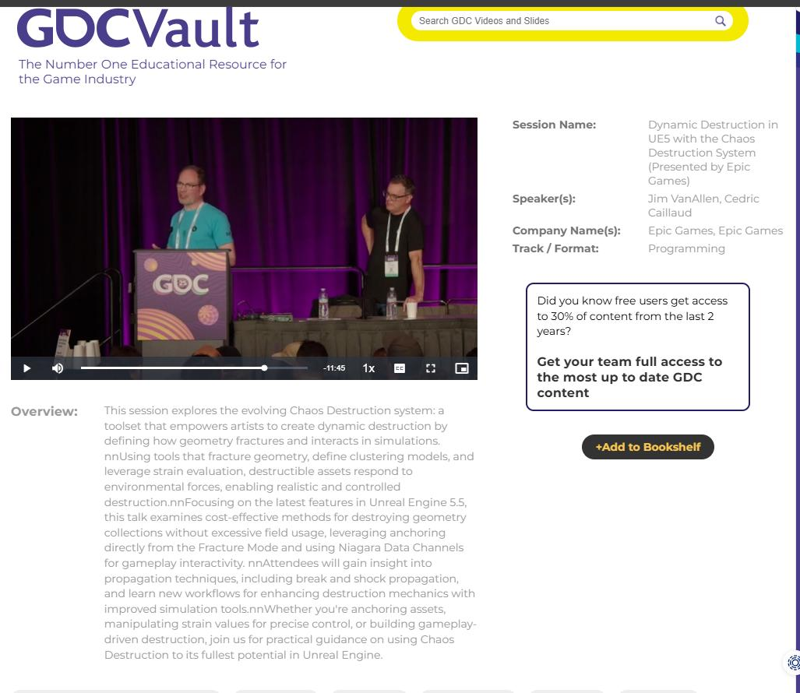
Research Methodologies
• Data Gathering and Analysis. I gathered data on my forum. To show recording development process. So, I can analyse the game feel of the prototype by comparing it to my influences Marvel Rivals and Battlefield. By observing how far off I am keeps on track. As not going for their style fully just taking inspiration. But shows how separate the games are from each other as in their genres through environmental interactivity. I draw a conclusion to whether my arena has the feel that makes the player feel more engaged for the feel of destruction with the core gameplay of collection keys.
• Problems with the outcomes of finding things. No one online talked about how meshes have to be textured both sides. As most aren’t it made destructive pieces look bland with nothing on them. So had to find special meshes that are textured on the inside. Most buildings are made as a brick. Which meant I had to switch to a dollhouse styled house. Making it so it was hollow on the inside meaning it was textured. Being better for my project.
Documentation of Production Planning
Asset List
▶ Buildings - Fully destructible
▶Props (sandbags, cones, trash bag,
bulk bag) Physics moveable
▶Containers – Static Meant for
blocking in player
▶Warehouse – Static Player spawn
▶Cranes – Semi Destructible
For time management stuck to the Gantt chart. Keeping research within start of October then continuing the prototype till February. For the testing
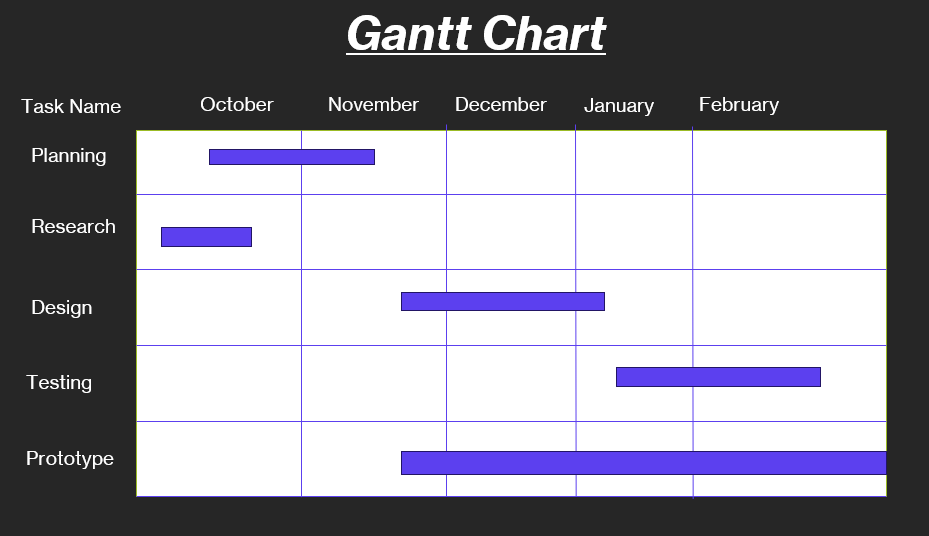
Documentation of Production Planning
• Technical Requirements Software planning to use
▶Unreal Engine 5 ▶Photoshop ▶Blender
• Level Design Floor Plan – Showing the blocked out level a simple sketch on paint to see the planning or what will go where.
• Prototyping. My plan is to use iterative prototyping process. Environment destruction is very technically heavy. So I planned on creating multiple throwaway scenes to test the physics limits before final prototype.
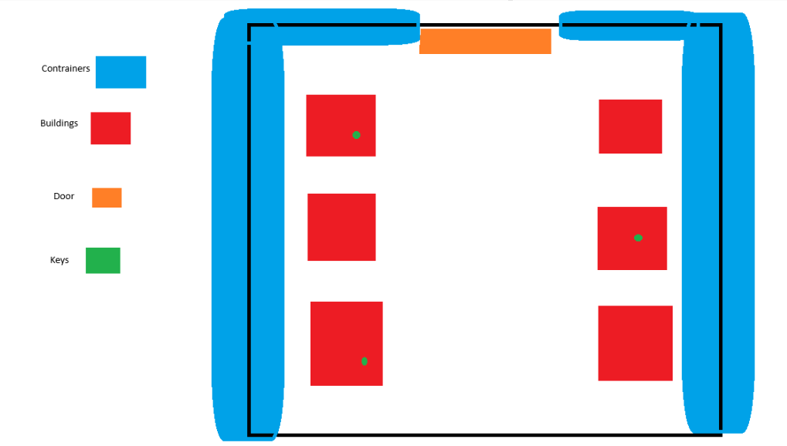
Documentation of Production Planning (Prototypes)
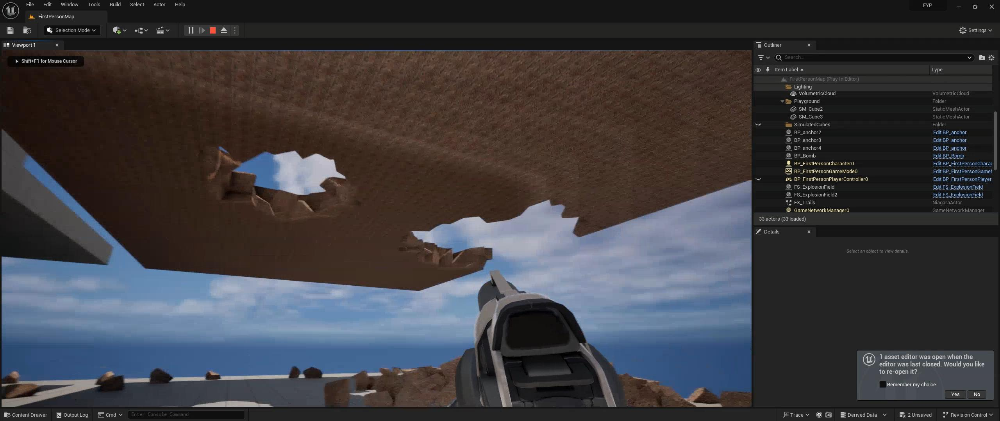
Documentation of Production Main Development
Step by step Method of production First time attempting chaos within the engine. Tried different fracture settings.
Then took it up a notch and tried it on a floor plan which was testing to be the ceiling. With anchor fields
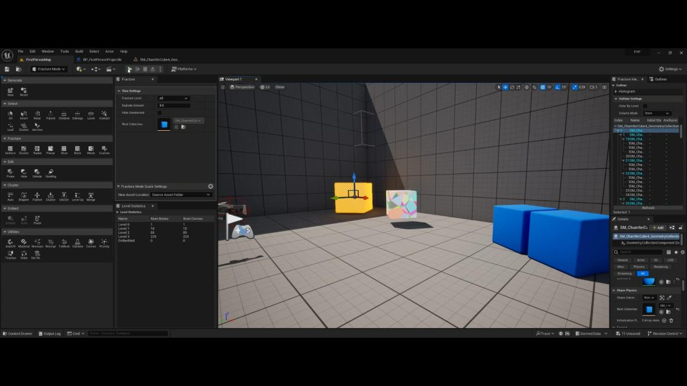
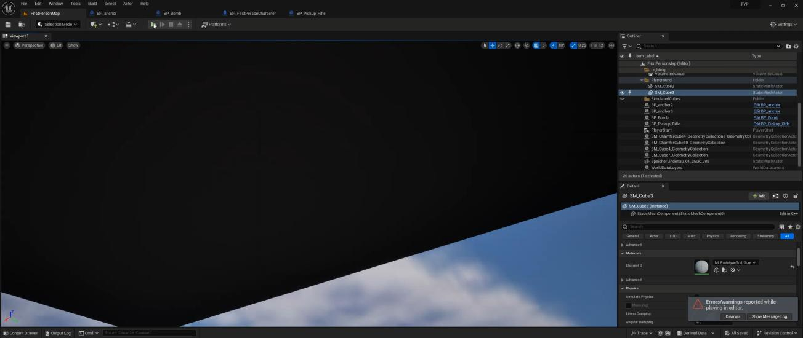
Documentation of Production Main Development
• Added some VFX and textures but didn’t like the way it breaks apart. So tried another project knowing how chaos and fracturing work.
• Got a asset pack and saw the building had textures inside of the building. So tried a project with this building.
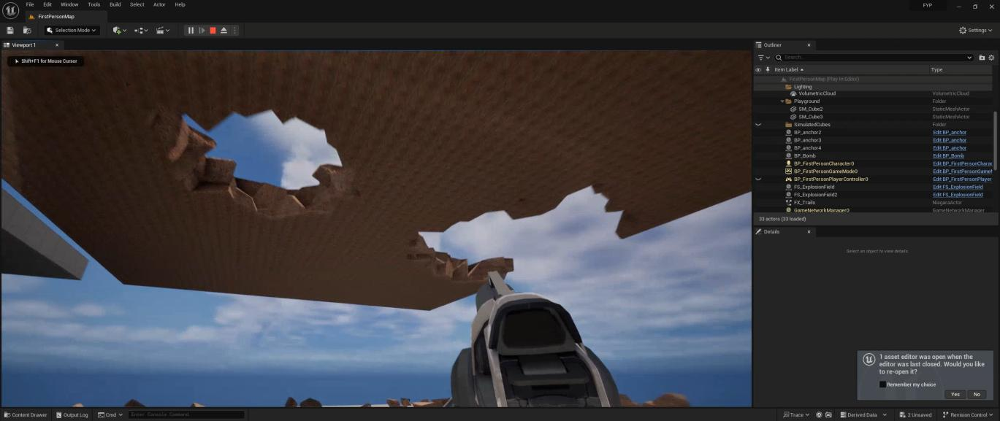
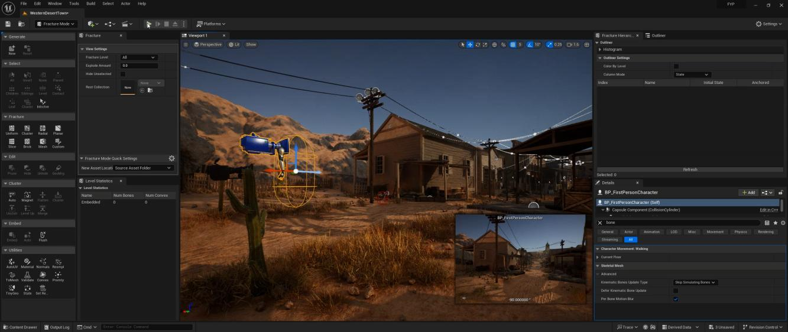
Documentation of Production Main Development
On the side mechanic to have the gameplay mechanic adding in something like a door and keys to locate around the buildings. Did a simple door and key collecting and interacting got placeholders for now will find some meshes to put in
After destroying the building realised the main thing that feels off is the fact the meshes, I used up till now don't have depth. What I mean is when you break it its thin and doesn't feel realistic. Adding to why I couldn't make it feel realistic. So, I will be doing what said was going to be done and go for a doll house style. Open ended so can have thicker walls and floors not paper thickness.
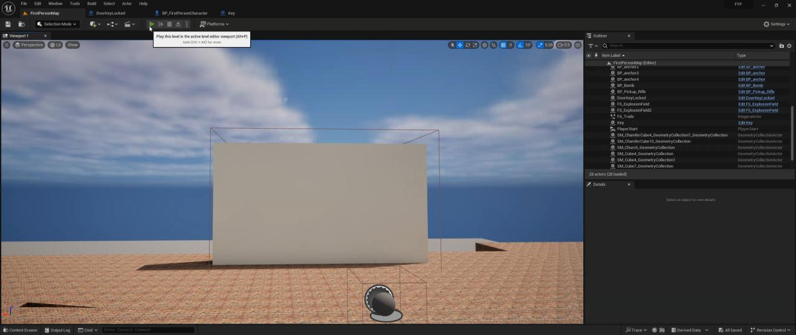
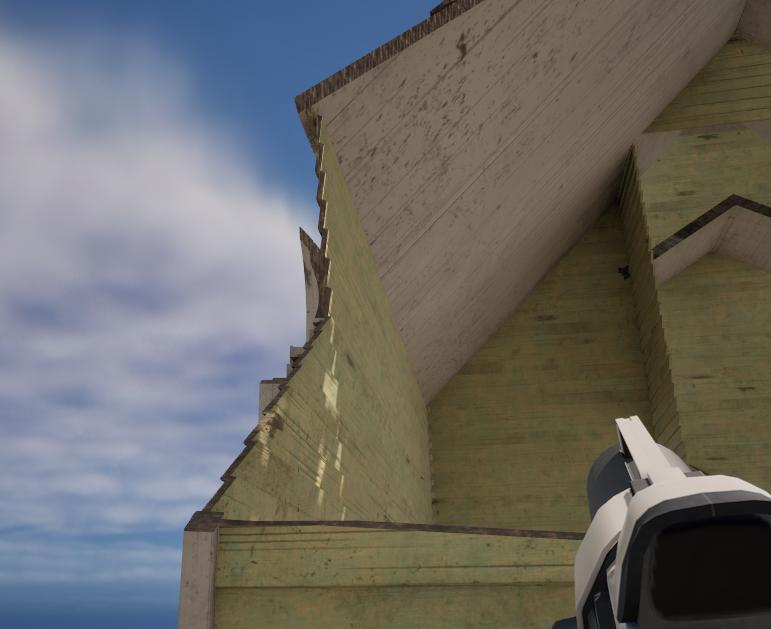
Documentation of Production Main Development
Old fracture settings and physics Updated fracture settings and physics
Different project settings.
Now in new project the settings reflect of much more accurate and look better. Continuing off this fracture settings.
Main reason I realised there's something wrong is that both of them are on the exact same settings, but my project must've gone wrong somewhere else. So, I started fresh in new project.
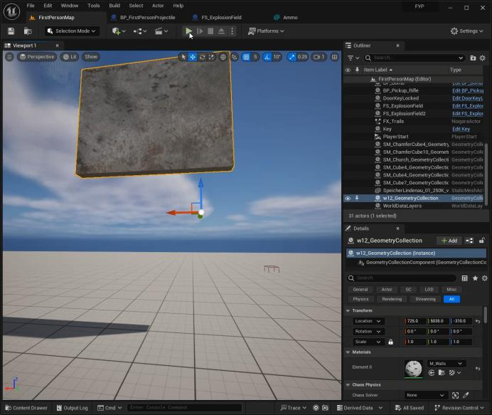
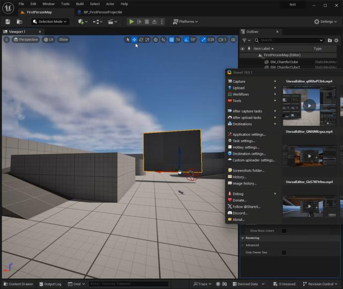
Documentation of Production Main Development
Columns
• With the physics I liked got a new mesh. But this time the main different part was that there were different pieces. For each part of the house like columns, walls ,doors and windows. Which meant had to fracture each and every single part of the building to a certain setting mostly between uniform and few others. Worked much better as they each had their own accountability.
Doors/Windows Walls
Documentation of Production Main Development
• Had to implement each geometry collection to a anchor field. So, every single part had to do the same. Once put every single piece inside the BP.
• I had to have them initialise. So when the player wants to attack the building it calculates that the geometry collection is not longer within the anchor field and falls apart crumbling.
Documentation of Production Main Development
• Put all pieces in , except windows first. All being geometry collection. Then being held with anchor fields within the BP.
• Chaos Field and Anchor Field polishing off
• Changing collisions to let bullet interact with and
• Added in windows and made separate anchor fields from the Columns and walls.
Documentation of Production Main Development
• Added in some VFX on impact bullet destruction blow up effect. And smoke on the pieces that are breaking apart • Put it in level to showcase. Destruction feels much better things that are now being a problem is the material. When the pieces break apart you can see the black bits inside of it Which I tried fixing. But still shows whenever breaking apart.
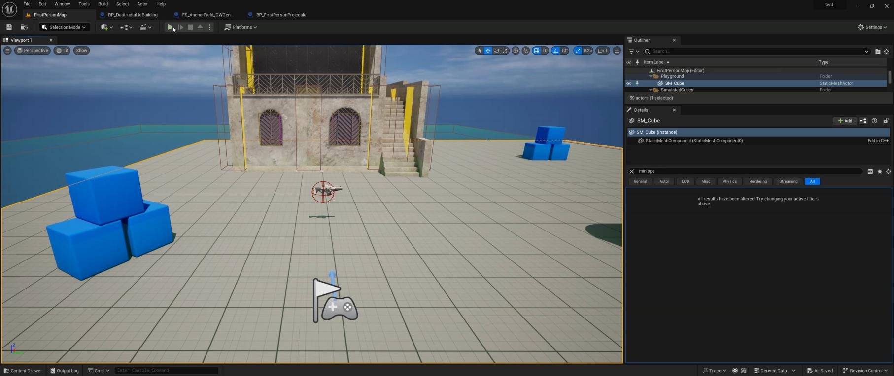
Documentation of Production Main Development
• Added in some camera shake. To make it feel more immersive for the player when building is impacted. • Some barrels that impact on the buildings as well but looks very rough
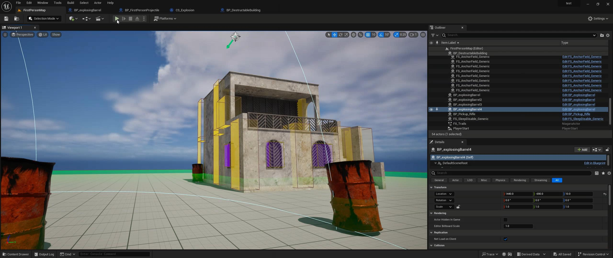
Documentation of Production Main Development
• Continuing off the material error from before after watching tutorials going on UE forms only option, I had was to match the inner colour with the exterior. So I ended up matching the materials really wanted the concrete material to give that broken off feel. But couldn’t make it work
• Changed it to a different colour to match it to the levels theme. Which is a construction site.
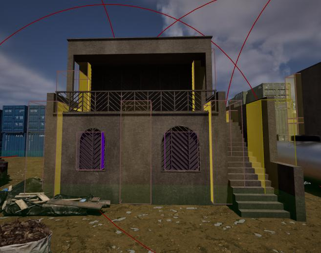
Documentation of Production Main Development
• Following off my level layout when planning. Started on the showcase level
• Blocked out level with all the buildings where I wanted them to be.
• Added in some containers around the demo arena. To keep the player within the area, Also keys being spread around the are for players to find.
Added in post processing with some others things to polish of the look of the level.

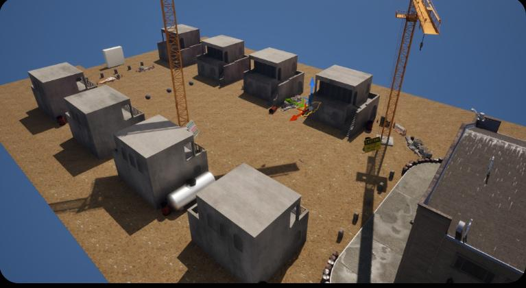
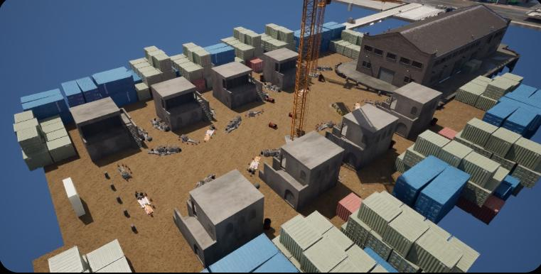
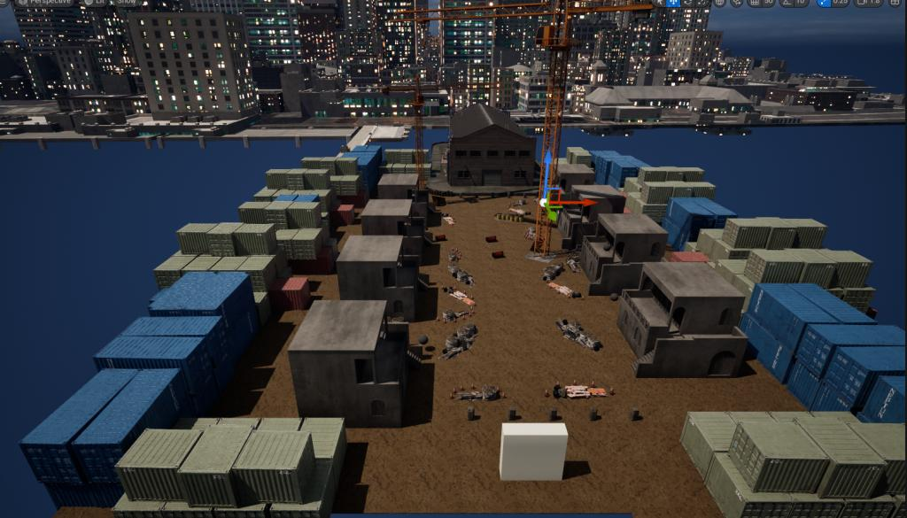
Documentation of Production Main Development
• As my project is kind of demanding on the pc. Requires a bit more VRAM. So when testing on other PCs need to put in r.Streaming.PoolSize 4000 Which allows the limit to be to 4GB.
• Polishing off the gameplay aspect of the game. Adding in lights that updates with every key then opens up.
• Player spawn point added in decorations to give it a better feel.
Changes to sky to make it look more polluted
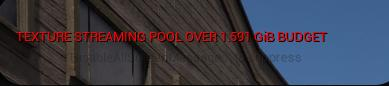
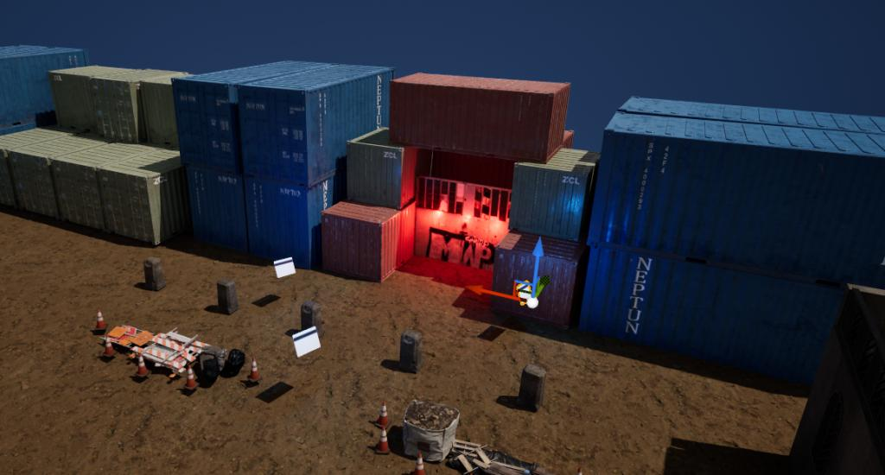
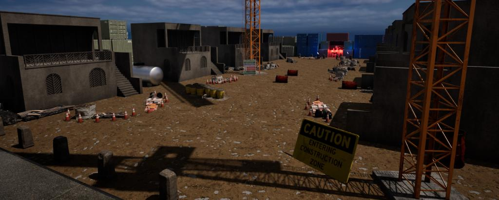
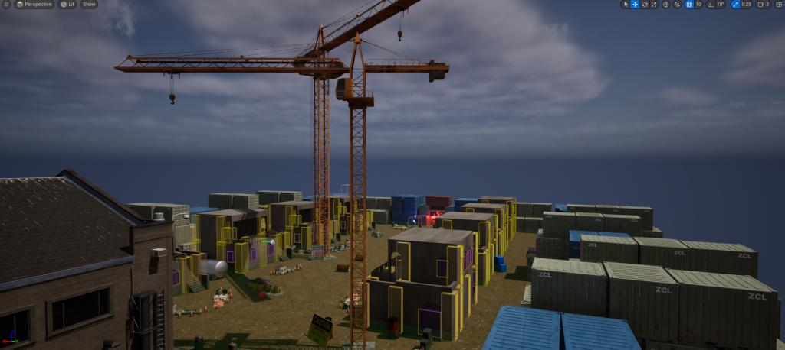
Documentation of Production Main Development
• Problem with when trying to make it a stand alone game for testing. The game physics didn’t listen. Anchor fields weren’t doing anything. Felt like a bomb impacting on all buildings at the same time.
• For the fix managed to fix it. Had to make a few changed in project settings more into about chaos system.
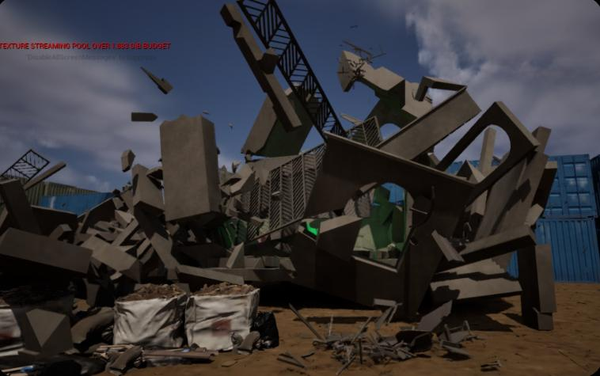
Documentation of Production Main Development - Testing
• Made a forum and got 5 people to test it • The first question was asking where the damage is had 4/5 people either agreeing or saying mostly. One said not really close not sure how as it’s a anomaly I let it be. • Asking for suggestions on what to add. 3 of them went with VFX which was when I realised I turned a blind eye to the smoke effect that I worked on. As there was multiple buildings I had to change some settings in the VFX so that the smoke effect came on all buildings. One said add depth to it which im guessing is related to the smoke effect to add depth to it. Again a anomaly asking for a whole different mesh.
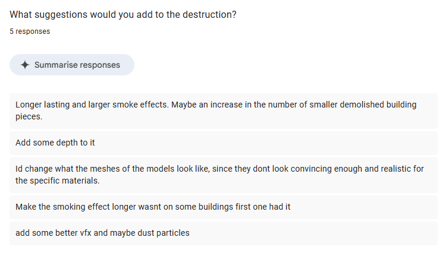
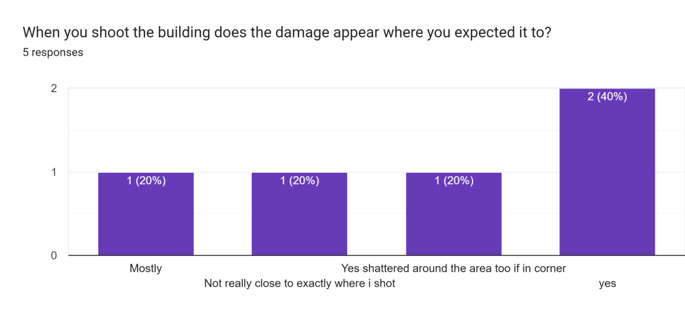
Documentation of Production Main Development - Testing
• Then asking the main thing about the feeling of destruction. Had a slight positive end with 60%. Which is good but could do some work.
• For the weapon feel itself again 4 people agreed while one didn’t. So, the weapon did its job in the field
• Everyone agreed with if it was easy to tell which parts are broken which is good helps me know that if it was in a game would make it easy for a player to navigate through.
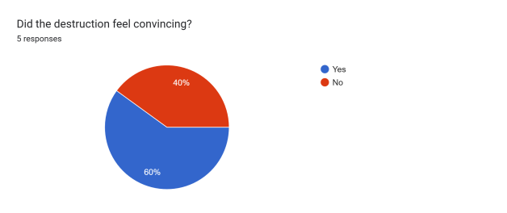
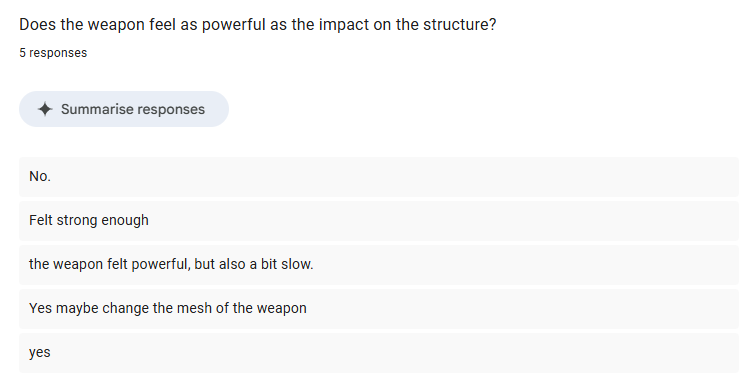
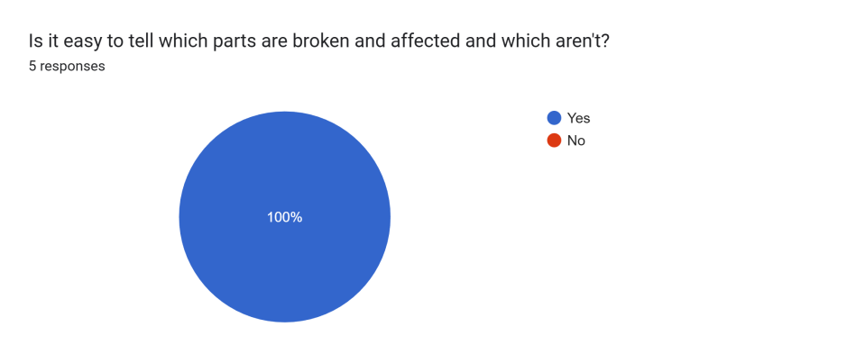
Documentation of Production Main Development - Testing
• For this question it answered if the building immediately broke or had a delay 3 people said immediately while one said wasn’t breaking where they shot. And one felt a delay. I think the reason for the delay was for the VRAM the tester probably didn’t put in the command console I said to enter which would make sense. And with some places not breaking I get as some pieces are meant to stand up if shot at rapid pace to keep optimisation.
• In this lets me know if it felt repetitive. It was a similar one between the two arguments one saying it did. And others saying from other angles felt quite different visuals. Some also wanting the feel to shoot more. I think that is ok as it is just a side aspect of a game wouldn’t be a core mechanic unless that was the game. As my inspirations Battlefield only shoot when really needed.
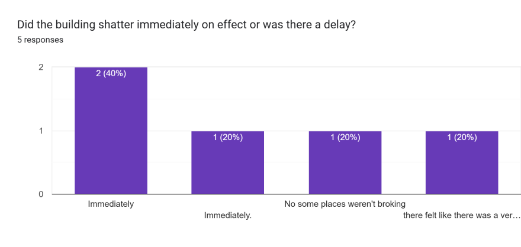
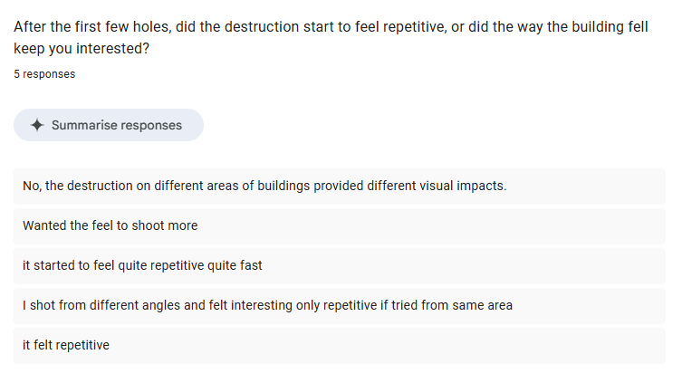
Documentation of Production Main Development - Testing
• This was one of the main ones to let me know if it was visually appealing when it was breaking. Getting 3/4s isn’t perfect but still on the positive side. Letting me know its to a good standard. Im sure would’ve been higher with the smoke VFX now fixed.
• For how heavy the pieces felt. It was a bit of everything highest being 4 then drawing out the rest. So I feel like that means the pieces are heavy sometimes but then again might’ve not put the VRAM code to make it slow as not enough to run it.
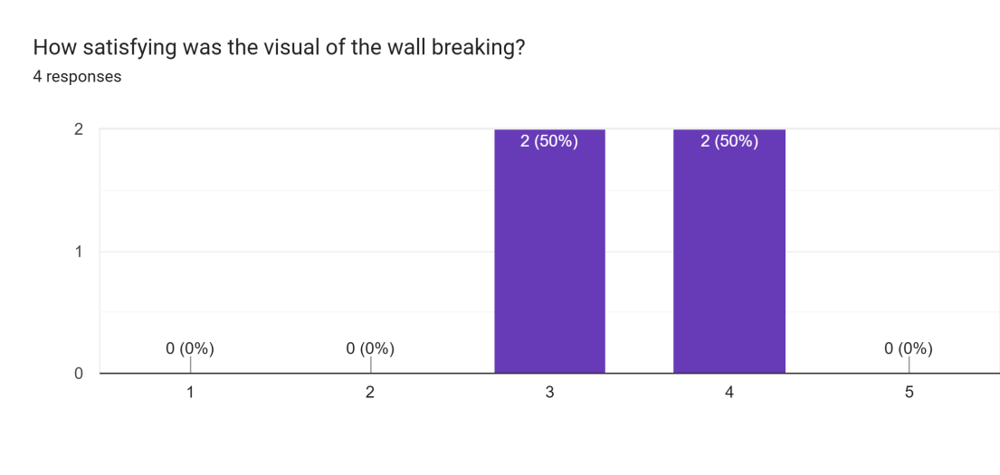
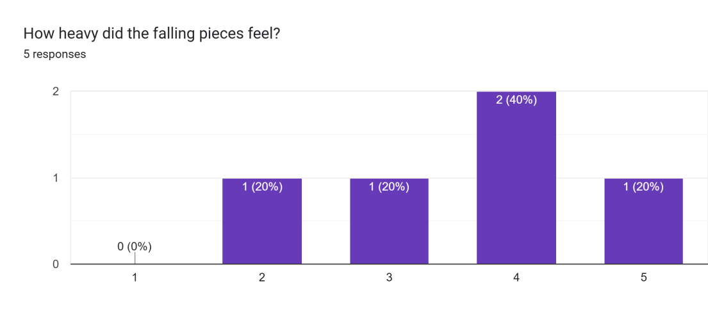
Documentation of Production Main Development - Testing
• Testing feedback - What I changed in the end. I made the smoke effect last on every building now. Looking back should’ve realised sooner but changed that up making it look much better. Adding in that depth and keeping in smoke for longer taking in that feedback.
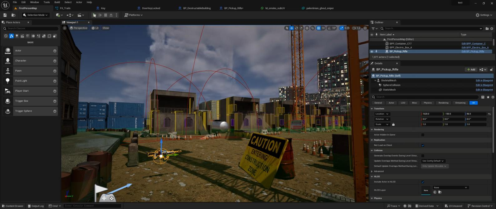
Final Artefact
Final Showcase of the destructible arena. The barrels were too demanding on the VRAM for performance issues i removed it from going near the building kept it in the level to still blow up.
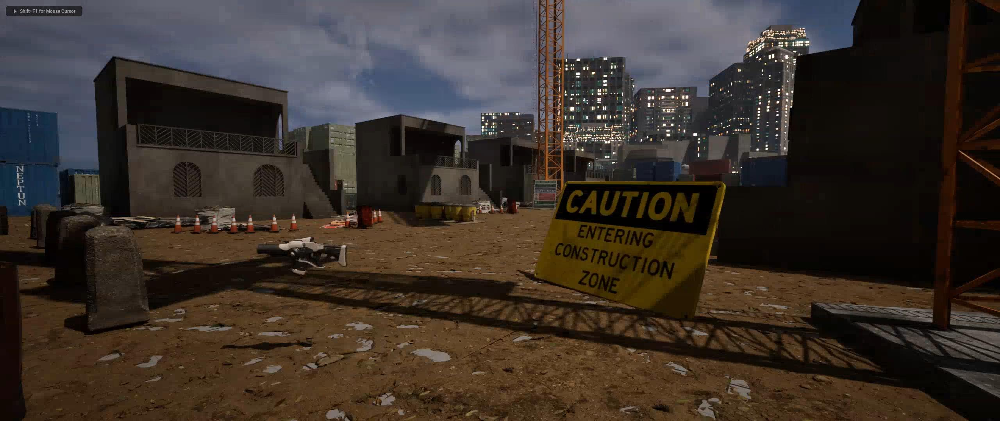
Evaluative Review
• I feel like I was successful in creating a fully destructible arena using chaos destruction in UE5. The gameplay loop was just there so when I have people testing, they have some sort of aim. I had to compromise on the idea I had at the start and go with the dollhouse which I said was a backup option to make sure the textures were on both sides. But still turned out well.
• Testing feedback. While some saw some damage where it was done. Only 60% found it convincing. To fix this had the camera shake bit more and persistent smoke VFX.
• If I was to continue on this project again a few things Id add would be , Materials as for the inner material I wanted concrete with broken edges. By creating a custom shader. Making a larger scale as inspired by battlefield. And implementing GPU simulation techniques which I saw on the GDC session to allow even more complex destruction.
Bibliography
YouTube Tutorials
Intro to Chaos
https://www.youtube.com/watch?v=ThZPXbEtNsE
Explosion using Physics Fields
https://www.youtube.com/watch?v=i5f1DevgDUs
Controlling destruction with Anchor Fields
https://www.youtube.com/watch?v=DbwCDz0zFBQ&t=51 3s
https://www.youtube.com/watch?v=9V5zqRLYEsE
https://www.youtube.com/watch?v=Kr- zfGZF9AA&t=5527s
https://www.youtube.com/watch?v=hlz4WwIfRN8 https://www.youtube.com/watch?v=1- a5zDkZhA0&t=77s
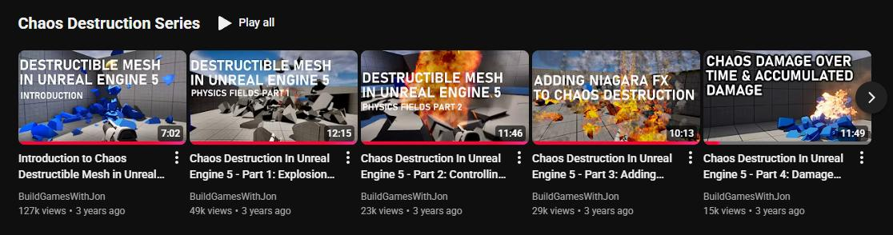
Protocol: Shatter
Thank you for looking at my Development Report
Researcher Harshiv Pankhania